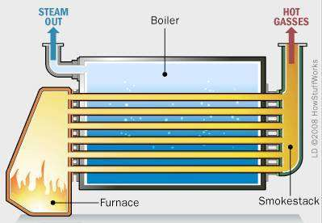

Ćwiczenie 3: Bilans Kotłowni Parowej
🏭 Projekt: Etap 3 - Kotłownia
Fabryka “Termo-Tech” wykorzystuje parę wodną do procesów technologicznych (np. pasteryzacja, suszenie). Obecny kocioł gazowy wytwarza parę o parametrach:

- Ciśnienie: \(p = 10 \text{ bar}\) (abs)
- Temperatura: \(t = 250^\circ C\)
Twoje Zadanie:
- Określić stan termodynamiczny pary (nasycona czy przegrzana?).
- Obliczyć entalpię pary wylotowej.
- Obliczyć moc cieplną kotła dla strumienia \(\dot{m} = 2 \text{ t/h}\).
- Oszacować zużycie gazu ziemnego.
📊 Zadanie 3.1: Stan Pary (Tablice)
Sprawdźmy, czy para na wylocie z kotła jest nasycona, mokra czy przegrzana.
Jak korzystać z tablic?
- Znajdź w tablicach nasycenia ciśnienie \(p = 10 \text{ bar} = 1 \text{ MPa}\).
- Odczytaj temperaturę nasycenia \(t_{sat}\) (punkt wrzenia).
- Porównaj \(t_{rzecz}\) z \(t_{sat}\).
Analiza:
- Dla \(p = 10 \text{ bar}\), \(t_{sat} \approx 179.9^\circ C\).
- Mamy: \(t_{rzecz} = 250^\circ C\).
Wniosek: \(t_{rzecz} > t_{sat}\), więc jest to Para Przegrzana. Musimy szukać entalpii w tablicach dla pary przegrzanej!
🔥 Zadanie 3.2: Bilans Energii Kotła
Kocioł podgrzewa wodę zasilającą o temperaturze \(t_{zas} = 60^\circ C\) do postaci pary przegrzanej (\(10 \text{ bar}, 250^\circ C\)).
Dane z Tablic:
- Woda zasilająca (\(60^\circ C\), ciecz):
- \(h_1 \approx c_w \cdot t_{zas} = 4.19 \cdot 60 = \mathbf{251.4 \text{ kJ/kg}}\).
- Para wylotowa (\(10 \text{ bar}, 250^\circ C\)):
- Z tablic przegrzania: \(h_2 = \mathbf{2943 \text{ kJ/kg}}\).
Moc Cieplna Kotła (\(\dot{Q}\)):
\[ \dot{Q} = \dot{m} \cdot (h_2 - h_1) \] \[ \dot{m} = 2 \text{ t/h} = \frac{2000}{3600} \approx 0.556 \text{ kg/s} \]
\[ \dot{Q} = 0.556 \cdot (2943 - 251.4) = 0.556 \cdot 2691.6 \] \[ \dot{Q} \approx 1496 \text{ kW} \approx \mathbf{1.5 \text{ MW}} \]
⛽ Zadanie 3.3: Zużycie Paliwa
Ile gazu ziemnego zużywa kocioł, jeśli jego sprawność wynosi \(\eta_k = 90\%\)?
- Wartość opałowa gazu (metan): \(W_d \approx 50 \text{ MJ/kg}\).
Bilans Paliwa:
\[ \dot{Q}_{paliwa} = \frac{\dot{Q}_{uzyteczne}}{\eta_k} \]
\[ \dot{Q}_{paliwa} = \dot{m}_{gaz} \cdot W_d = \frac{1496 \text{ kW}}{0.90} \]
\[ \dot{Q}_{paliwa} = 1662 \text{ kW} \]
\[ \dot{m}_{gaz} = \frac{1662 \text{ kJ/s}}{50\,000 \text{ kJ/kg}} \]
\[ \dot{m}_{gaz} \approx 0.0332 \text{ kg/s} \]
W jednostkach handlowych (\(m^3/h\)): Gęstość gazu \(\rho_{gaz} \approx 0.7 \text{ kg/m}^3\).
\[ \dot{V}_{gaz} = \frac{0.0332 \cdot 3600}{0.7} \]
\[ \dot{V}_{gaz} \approx \mathbf{171 \text{ m}^3/h} \]
💧 Zadanie 3.4: Dławienie Pary (h = const)
Przed wejściem do wymiennika ciepła ciśnienie pary jest redukowane zaworem redukcyjnym (dławienie) z \(10 \text{ bar}\) do \(2 \text{ bar}\). Proces dławienia jest izentalpowy (\(h_3 \approx h_2\)).
Pytanie: Jaka będzie temperatura pary po dławieniu?
- Stan początkowy: \(h_2 = 2943 \text{ kJ/kg}\) (\(10 \text{ bar}, 250^\circ C\)).
- Stan końcowy: \(p_3 = 2 \text{ bar}\), \(h_3 = 2943 \text{ kJ/kg}\).
Z tablic nasycenia dla 2 bar:
- \(h'' = 2706 \text{ kJ/kg}\) (para nasycona).
- \(h_3 > h''\) (\(2943 > 2706\)) → Nadal para przegrzana!
💧 Zadanie 3.4 (cd.): Odczyt Temperatury z Tablic
Z tablic przegrzania dla 2 bar: Szukamy, przy jakiej temperaturze \(h \approx 2943\).
- Dla \(200^\circ C\): \(h \approx 2870\)
- Dla \(250^\circ C\): \(h \approx 2970\)
- Interpolując: \(t_3 \approx 236^\circ C\).
Wniosek: Dławienie obniżyło ciśnienie drastycznie (10→2 bar), ale temperatura spadła nieznacznie (250→236°C). Para stała się “bardziej” przegrzana (dalej od nasycenia).
�️ Zadanie 3.5: Para Mokra – Stopień Suchości
W odbiorniku pary (wymiennik ciepła) para skrapla się częściowo. Serwisant zmierzył ciśnienie \(p = 4 \text{ bar}\) i temperaturę \(t = 143.6^\circ C\).
Czy para jest mokra, sucha nasycona, czy przegrzana?
Z tablic nasycenia dla \(p = 4 \text{ bar}\): \(t_{sat} = 143.6^\circ C\). \(t_{rzecz} = t_{sat}\) → Para jest nasycona (na linii nasycenia).
Ale jeśli ktoś zmierzy \(h = 2400 \text{ kJ/kg}\) (zamiast \(h'' = 2738\)), to: \[ x = \frac{h - h'}{h'' - h'} = \frac{2400 - 605}{2738 - 605} = \frac{1795}{2133} \approx \mathbf{0.84} \]
Warning
\(x = 0.84\) oznacza, że 16% to kropelki wody! To niebezpieczne dla łopatek turbiny (erozja). W wymienniku ciepła jest to normalne.
📋 Zadanie 3.6: Interpolacja w Tablicach
Nasz kocioł produkuje parę o parametrach \(p = 12 \text{ bar}, t = 275^\circ C\). Odczytaj entalpię i entropię z tablic pary przegrzanej, stosując interpolację liniową.
Dane z tablic przegrzania (12 bar)
| \(t\) [°C] | \(h\) [kJ/kg] | \(s\) [kJ/kgK] |
|---|---|---|
| 250 | 2935 | 6.830 |
| 300 | 3046 | 7.015 |
Interpolacja dla \(t = 275^\circ C\) (w połowie przedziału):
\[ h_{275} = 2935 + \frac{275 - 250}{300 - 250} \cdot (3046 - 2935) = 2935 + 0.5 \cdot 111 \] \[ h_{275} \approx \mathbf{2990.5 \text{ kJ/kg}} \]
\[ s_{275} = 6.830 + 0.5 \cdot (7.015 - 6.830) = 6.830 + 0.0925 \] \[ s_{275} \approx \mathbf{6.923 \text{ kJ/kgK}} \]
🔄 Zadanie 3.7: Entropia w Kotle
Oblicz zmianę entropii wody/pary w procesie parowania w kotle (z Zadania 3.2): woda \(60^\circ C\) → para \(10 \text{ bar}, 250^\circ C\).
Z tablic:
- Woda zasilająca (\(60^\circ C\)): \(s_1 \approx 0.831 \text{ kJ/kgK}\).
- Para wylotowa (\(10 \text{ bar}, 250^\circ C\)): \(s_2 = 6.926 \text{ kJ/kgK}\).
Zmiana entropii (na 1 kg): \[ \Delta s = s_2 - s_1 = 6.926 - 0.831 \] \[ \Delta s = \mathbf{6.095 \text{ kJ/kgK}} \]
Strumień entropii: \[ \dot{S} = \dot{m} \cdot \Delta s = 0.556 \cdot 6.095 \] \[ \dot{S} \approx \mathbf{3.39 \text{ kW/K}} \]
To ogromny wzrost entropii!
Energia chemiczna paliwa (niska entropia) zamieniana jest na ciepło pary (wysoka entropia). Proces spalania jest silnie nieodwracalny.
💧 Zadanie 3.8: Bilans Kondensatu
Wymiennik ciepła (odbiornik) skrapla parę z \(2 \text{ bar}, 236^\circ C\) do wrzątku (\(t_{sat} = 120.2^\circ C\) przy 2 bar). Kondensat wraca do kotła.
Ile ciepła oddaje 1 kg pary w wymienniku?
Z tablic:
- \(h_{wlot} = 2943 \text{ kJ/kg}\) (para przegrzana, 2 bar, 236°C)
- \(h_{wylot} = h' (2 \text{ bar}) = 504.7 \text{ kJ/kg}\) (ciecz nasycona)
\[ q_{wymiennik} = h_{wlot} - h_{wylot} = 2943 - 504.7 = \mathbf{2438.3 \text{ kJ/kg}} \]
Moc cieplna wymiennika (przy \(\dot{m} = 0.556\) kg/s): \[ \dot{Q}_{wym} = 0.556 \cdot 2438.3 \approx \mathbf{1356 \text{ kW} = 1.36 \text{ MW}} \]
Tip
Prawie cała energia pary (\(91\%\) z \(1.5\) MW) jest oddawana w wymienniku. Reszta (\(144\) kW) to energia kondensatu, którą odzyskujemy w obiegu zamkniętym.
�🏠 Zadanie Domowe (Raport 3)
Temat: Kocioł Kondensacyjny?
Inżynier proponuje wymianę kotła na kondensacyjny. Aby to miało sens, musimy odzyskać ciepło skraplania pary wodnej ze spalin.
- Przy spalaniu \(1 \text{ m}^3\) gazu powstaje ok. \(1.6 \text{ kg}\) wody w spalinach.
- Ciepło parowania wody \(r \approx 2500 \text{ kJ/kg}\).
- Nasz kocioł zużywa \(171 \text{ m}^3/h\) gazu.
Oblicz: Jaki dodatkowy strumień ciepła [kW] możemy odzyskać, jeśli skroplimy całą parę wodną ze spalin? O ile % wzrośnie sprawność kotłowni?

Termodynamika Techniczna - Ćwiczenia Projektowe